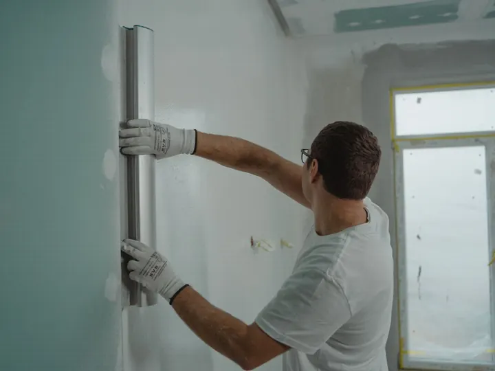
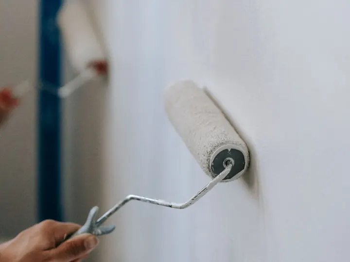
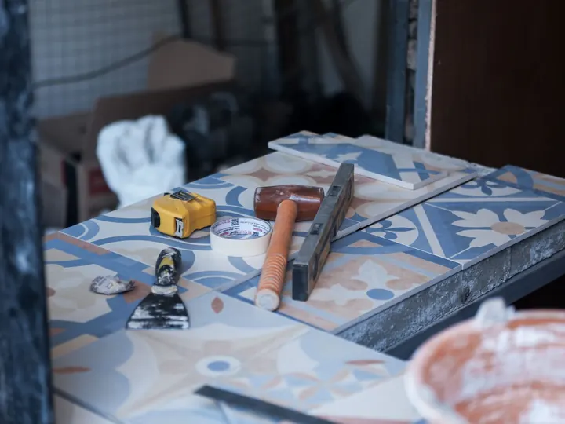
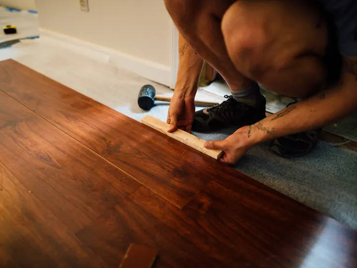
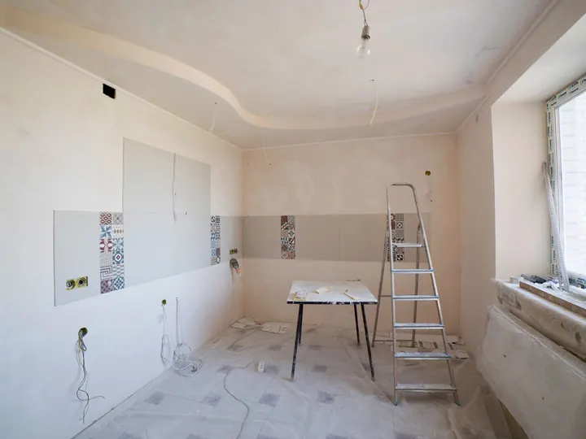
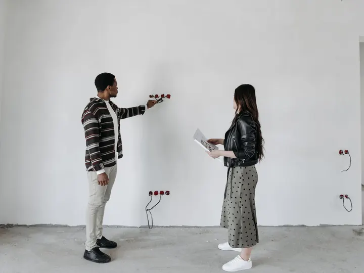
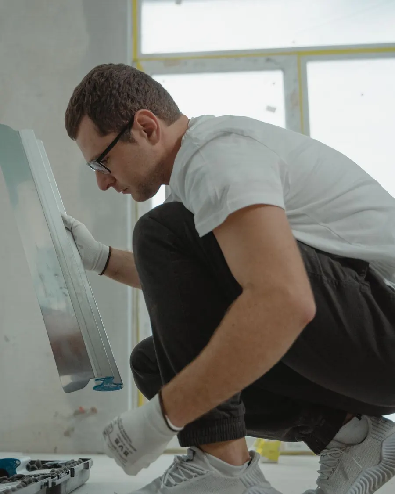
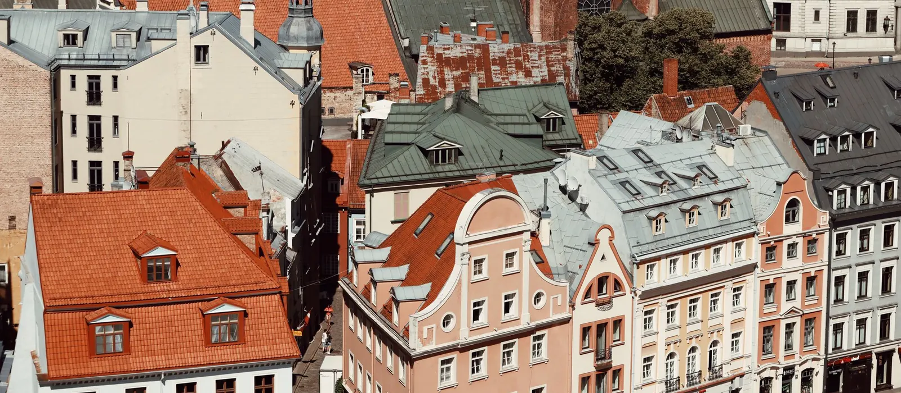

1Apmetums un špaktelēšana
Izlīdzinām sienas un griestus, aizpildām plaisas un sagatavojam virsmas krāsošanai vai tapetēm.
Būvniecības un remonta darbi Rīgā
Sienas un griesti, krāsošana, flīzes, grīdas un dzīvokļa remonts no sākuma līdz beigām. Pastāstiet, kas jāizdara, un piedāvāsim, kā to paveikt.
Pakalpojumi
Iekšdarbi no sienas sagatavošanas līdz pēdējai krāsas kārtai, kā arī būvdarbu vadīšana, ja būvējat vai pārbūvējat.

1Izlīdzinām sienas un griestus, aizpildām plaisas un sagatavojam virsmas krāsošanai vai tapetēm.

2Krāsojam sienas, griestus, durvis un palodzes. Pirms darba nosedzam grīdu un mēbeles.

3Vannas istabas, virtuves un gaiteņi: flīzes uz grīdas un sienām, ar vienmērīgām šuvēm un taisnām līnijām.

4Sagatavojam pamatni, ieklājam lamināta vai parketa grīdu un uzstādām grīdlīstes.

5Kosmētisks vai pilns remonts: plānojam darbus pareizā secībā, lai telpas būtu gatavas bez liekas gaidīšanas.

6Esam būvkomersantu reģistrā ēku būvdarbu vadīšanai un būvuzraudzībai. Organizējam un uzraugām darbus objektā.
Kā strādājam
Pastāstiet, kas jāizdara un kur. Ja ir fotogrāfijas vai plāns, atsūtiet tos uz e-pastu.
Atbraucam, apskatām telpas un izmērām, lai saprastu darba apjomu.
Sagatavojam darbu sarakstu ar cenu un termiņu. Darbus sākam, kad viss ir saskaņots.
Strādājam pēc saskaņotā plāna. Beigās kopā apskatām paveikto.


Kur strādājam
Strādājam Rīgā. Ja objekts ir ārpus pilsētas, piezvaniet vai uzrakstiet, un vienosimies.
Kontakti
Kāda telpa, kas jāizdara un kad vēlaties sākt. Atbildēsim un sarunāsim apskati.